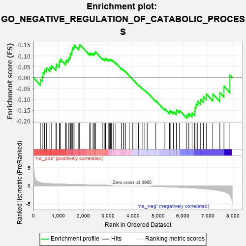
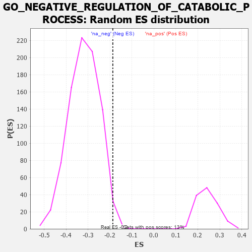

| | | Dataset | 7d |
| Phenotype | NoPhenotypeAvailable |
| Upregulated in class | na_neg |
| GeneSet | GO_NEGATIVE_REGULATION_OF_CATABOLIC_PROCESS |
| Enrichment Score (ES) | -0.18727428 |
| Normalized Enrichment Score (NES) | -0.5879785 |
| Nominal p-value | 0.9896552 |
| FDR q-value | 1.0 |
| FWER p-Value | 1.0 |
Table: GSEA Results Summary

Fig 1: Enrichment plot: GO_NEGATIVE_REGULATION_OF_CATABOLIC_PROCESS
Profile of the Running ES Score & Positions of GeneSet Members on the Rank Ordered List
| PROBE | GENE SYMBOL | GENE_TITLE | RANK IN GENE LIST | RANK METRIC SCORE | RUNNING ES | CORE ENRICHMENT | | 1 | HGF | | | 276 | 0.870 | -0.0082 | No |
| 2 | GSK3A | | | 351 | 0.745 | 0.0053 | No |
| 3 | AXIN2 | | | 383 | 0.713 | 0.0233 | No |
| 4 | SUFU | | | 443 | 0.665 | 0.0363 | No |
| 5 | HTRA2 | | | 527 | 0.621 | 0.0449 | No |
| 6 | PARN | | | 660 | 0.572 | 0.0458 | No |
| 7 | SF3B3 | | | 729 | 0.552 | 0.0541 | No |
| 8 | NSUN2 | | | 901 | 0.506 | 0.0480 | No |
| 9 | WDR6 | | | 916 | 0.504 | 0.0617 | No |
| 10 | AKT1 | | | 1040 | 0.476 | 0.0608 | No |
| 11 | TAF9 | | | 1046 | 0.475 | 0.0748 | No |
| 12 | FOXK2 | | | 1081 | 0.467 | 0.0848 | No |
| 13 | DKC1 | | | 1292 | 0.431 | 0.0715 | No |
| 14 | NRDE2 | | | 1320 | 0.425 | 0.0811 | No |
| 15 | NOCT | | | 1402 | 0.409 | 0.0835 | No |
| 16 | RBM10 | | | 1430 | 0.404 | 0.0925 | No |
| 17 | TIMP2 | | | 1478 | 0.394 | 0.0987 | No |
| 18 | TAF15 | | | 1481 | 0.393 | 0.1105 | No |
| 19 | SCO1 | | | 1536 | 0.385 | 0.1155 | No |
| 20 | QSOX1 | | | 1550 | 0.382 | 0.1256 | No |
| 21 | BOLL | | | 1561 | 0.381 | 0.1361 | No |
| 22 | N4BP1 | | | 1622 | 0.370 | 0.1399 | No |
| 23 | DERL2 | | | 1632 | 0.368 | 0.1501 | No |
| 24 | FMR1 | | | 1816 | 0.334 | 0.1372 | No |
| 25 | GATA4 | | | 1837 | 0.330 | 0.1448 | No |
| 26 | FOXK1 | | | 1859 | 0.326 | 0.1521 | No |
| 27 | PSMF1 | | | 2251 | 0.268 | 0.1108 | No |
| 28 | NBAS | | | 2299 | 0.260 | 0.1129 | No |
| 29 | HIPK2 | | | 2389 | 0.247 | 0.1092 | No |
| 30 | MET | | | 2430 | 0.240 | 0.1115 | No |
| 31 | UBXN1 | | | 2467 | 0.232 | 0.1141 | No |
| 32 | UBAC2 | | | 2488 | 0.229 | 0.1186 | No |
| 33 | SCFD1 | | | 2783 | 0.185 | 0.0870 | No |
| 34 | UCHL5 | | | 2864 | 0.172 | 0.0822 | No |
| 35 | CIRBP | | | 2876 | 0.170 | 0.0860 | No |
| 36 | MTM1 | | | 2893 | 0.168 | 0.0892 | No |
| 37 | AZIN2 | | | 2993 | 0.150 | 0.0812 | No |
| 38 | BSCL2 | | | 3021 | 0.146 | 0.0823 | No |
| 39 | FEZ1 | | | 3055 | 0.142 | 0.0825 | No |
| 40 | TIGAR | | | 3091 | 0.138 | 0.0823 | No |
| 41 | MTMR2 | | | 3126 | 0.133 | 0.0821 | No |
| 42 | MTMR8 | | | 3200 | 0.122 | 0.0766 | No |
| 43 | SMAD3 | | | 3303 | 0.105 | 0.0669 | No |
| 44 | NELL1 | | | 3538 | 0.070 | 0.0394 | No |
| 45 | PIN1 | | | 3543 | 0.069 | 0.0410 | No |
| 46 | WAC | | | 3618 | 0.056 | 0.0334 | No |
| 47 | RIC1 | | | 3627 | 0.055 | 0.0341 | No |
| 48 | DHX9 | | | 3693 | 0.044 | 0.0272 | No |
| 49 | SMG1 | | | 3843 | 0.021 | 0.0090 | No |
| 50 | NCOR1 | | | 3961 | 0.000 | -0.0058 | No |
| 51 | VPS35 | | | 3989 | -0.006 | -0.0091 | No |
| 52 | MTOR | | | 4114 | -0.025 | -0.0240 | No |
| 53 | TIMP1 | | | 4209 | -0.043 | -0.0346 | No |
| 54 | RRAGA | | | 4223 | -0.046 | -0.0349 | No |
| 55 | NRBP2 | | | 4274 | -0.055 | -0.0395 | No |
| 56 | MTMR9 | | | 4387 | -0.074 | -0.0514 | No |
| 57 | LRRK2 | | | 4467 | -0.087 | -0.0587 | No |
| 58 | BAG6 | | | 4563 | -0.108 | -0.0675 | No |
| 59 | TLK2 | | | 4909 | -0.179 | -0.1057 | No |
| 60 | EPHA4 | | | 5273 | -0.265 | -0.1435 | No |
| 61 | LRIG2 | | | 5460 | -0.310 | -0.1575 | No |
| 62 | ACTN3 | | | 5486 | -0.315 | -0.1510 | No |
| 63 | LARP1 | | | 5616 | -0.349 | -0.1566 | No |
| 64 | DAP | | | 5732 | -0.386 | -0.1593 | No |
| 65 | PDCL3 | | | 5738 | -0.388 | -0.1480 | No |
| 66 | ATG7 | | | 5858 | -0.420 | -0.1501 | No |
| 67 | ROCK1 | | | 6152 | -0.520 | -0.1713 | Yes |
| 68 | RGN | | | 6233 | -0.547 | -0.1646 | Yes |
| 69 | NPC1 | | | 6364 | -0.602 | -0.1625 | Yes |
| 70 | HERC1 | | | 6467 | -0.647 | -0.1555 | Yes |
| 71 | DYSF | | | 6481 | -0.654 | -0.1371 | Yes |
| 72 | PLIN5 | | | 6524 | -0.672 | -0.1217 | Yes |
| 73 | RNF41 | | | 6588 | -0.703 | -0.1081 | Yes |
| 74 | EGFR | | | 6708 | -0.765 | -0.0996 | Yes |
| 75 | GIPC1 | | | 6819 | -0.826 | -0.0881 | Yes |
| 76 | SNX3 | | | 6934 | -0.893 | -0.0751 | Yes |
| 77 | TSPO | | | 7194 | -1.065 | -0.0751 | Yes |
| 78 | CPTP | | | 7477 | -1.373 | -0.0686 | Yes |
| 79 | TAF1 | | | 7643 | -1.633 | -0.0392 | Yes |
| 80 | FYN | | | 7881 | -2.622 | 0.0114 | Yes |
Table: GSEA details [plain text format]

Fig 2: GO_NEGATIVE_REGULATION_OF_CATABOLIC_PROCESS: Random ES distribution
Gene set null distribution of ES for GO_NEGATIVE_REGULATION_OF_CATABOLIC_PROCESS